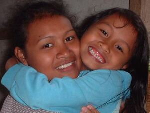

leheng 
/lɔgɔŋ/
v_rt.
“wrestle”
1.
v.
for someone (egleheng, migleheng/inleheng, leheng, agent, eg><ø-) to wrestle with someone (eglehengen, inleheng/migleheng/pigleheng, lehenga, theme, eg><en-)
Ka egleheng iyan ka pegkepkep te duma ne etew te minsan nekey ne tuyù.
Mania te egleheng ka te hari nu?
Why are you wrestled your (younger) brother?
Eng. restrain; wrestle; grab
Online dict status: -
Usage level: M
v.
for two people (egpalehengey, migpalehengey/inpalehengey, palehengey, egpaleglehengey, migpaleglehengey/inpaleglehengey, paleglehengey, agent, eg><ø-pA><ey-, eg><ø-pA><ey-rdpCVC-) to wrestle (each other)
Malasi egpaleglehengey ka me anak ku ne lukes.
My sons always wrestling with each other.
Syn. bueg
Eng. wrestle; tussle; fight
Tag. bunó
Ceb. dumug
Ilo.: ginnábbu
OCM: Games (524)
Online dict status: -
Usage level: M
2.
vt.
for a male (egleheng, migleheng/inleheng, leheng, agent, eg><ø-) to grab a woman (eglehengen, migleheng/inleheng/pigleheng, lehengen, theme, eg><en-) usually with malicious intent
Eglehengen e ka aye ku te uyab din.
The boyfriend of my auntie is going to rape her.
O. Syn. malung
Eng. assault; rape; hug; embrace
Tag. yakápin
Ceb. halog; gakus
Ilo.: arakúpen
OCM: Gestures and Signs (201)
Online dict status: -
Usage level: M
v.
for someone (egleheng-leheng, migleheng-leheng/inleheng-leheng, agent, eg><ø-rdpRT-) to be continuously embracing someone or something else
Eng. continuous embrace; hugging, continuous
Online dict status: -
Usage level: R
Updated by: RJH,TME,RJH,NJK,RAA,RJH
Last updated: 09/Jun/2010
This page last updated: 19/May/2012
Copyright © 2009-2010, Matigsalug Language Christian Association, Inc